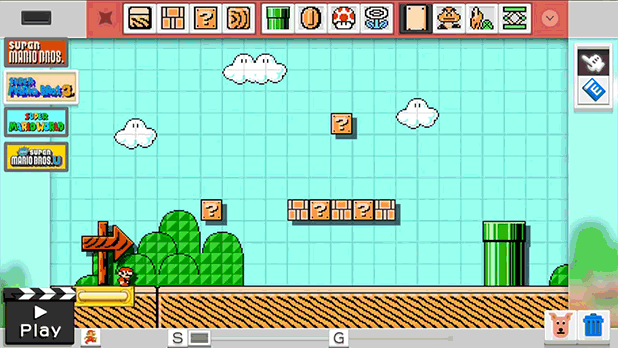
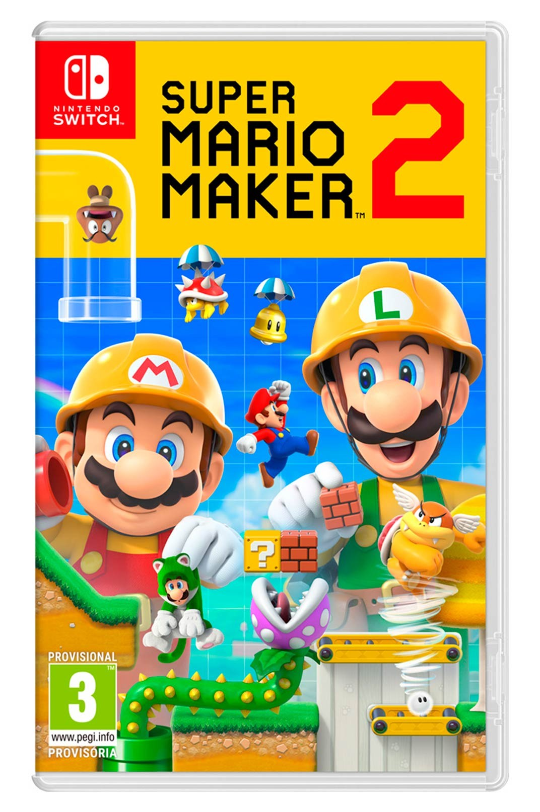

Super Mario Maker 2, la segunda parte del juego de plataformas de Wii U en el que podíamos crear nuestros propios niveles y compartirlos con otros jugadores a través de internet, llega a Nintendo Switch. Esta secuela estrena nuevas herramientas, objetos y funciones para crear cientos de niveles basados en distintos títulos de Mario, incluido Super Mario 3D World.

Super Mario Maker 2 retoma todos los titulos del fontanero los cuales son:
Super Mario Bros
Super Mario bros 3
Super Mario Wold
New Super Mario Bros.U
New Super Mario Bros 3D World
Portada de juego

Washington.- El gigante japonés de los videojuegos Nintendo anunció este miércoles el lanzamiento del "Super Mario Maker 2" para su consola Switch y también el retorno del "Link's Awakening" de la saga "The Legend of Zelda", que vio la luz por primera vez para Game Boy en 1993.
El esperado "Super Mario Maker 2", del que Nintendo ha revelado pocos detalles, saldrá a la venta el mes de junio, y dará así el salto de la consola Wii U en la que debutó el "Super Mario Maker" en 2015 a la Switch.